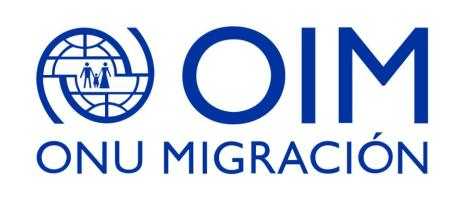

MediLyft pone a disposición una plataforma de salud orientada a la cobertura y seguimiento de salud de comunidades sin acceso regular al sistema de salud.
El paciente reporta su motivo de consulta por WhatsApp. El sistema lo conecta con un médico para videoconsulta en menos de 30 minutos. Sin requisito de seguro, sin red prestadora, sin sala de espera.
Sin formularios, sin repetir antecedentes. El médico evalúa y puede derivar al sistema público si el caso lo requiere.
El médico recibe el perfil completo antes de ingresar a la consulta. La conexión opera con ancho de banda reducido. La receta se emite digitalmente y el caso queda documentado para seguimiento.
Cada conversación enriquece el expediente automáticamente. Antecedentes, condiciones crónicas, medicación activa y diagnósticos externos quedan centralizados y disponibles, independientemente de dónde esté el paciente.
MediLyft consolida adherencia al tratamiento, condiciones crónicas, controles realizados y seguimiento activo en un indicador mensual por paciente. OIM puede ver el estado de salud de su comunidad en agregado.
MediLyft envía recordatorios, registra cada confirmación del paciente y alerta al médico cuando hay falta de adherencia. Permite identificar cuándo el motivo del tratamiento fue resuelto.
| Paciente | Condición | Medicación | Adherencia | Estado |
|---|---|---|---|---|
| Miguel R. | HTA | Losartán 50mg | ✓ 26/30 | Al día |
| Carmen V. | Diabetes T2 | Metformina 850mg | ⚠ 17/30 | Alerta activa |
| José P. | Asma | Salbutamol inh. | ✓ 24/30 | Al día |
| Luisa M. | HTA | Enalapril 10mg | ✗ 9/30 | ⚠ Crítica |
| Andrés S. | Dislipidemia | Atorvastatina 20mg | ✓ 28/30 | Al día |
Cuando un paciente llega con diagnósticos, recetas o tratamientos de otro centro o país, el sistema los registra, los vincula al perfil y activa alertas de seguimiento para el médico.
En los 10 centros físicos de OIM en el país, se instala un punto de acceso con pantalla y conexión. El paciente llega al centro y realiza su teleconsulta desde ahí, eliminando la dependencia de conectividad o dispositivo personal.
MediLyft integra teleconsulta, perfilamiento, adherencia, custodia de caso y el gabinete físico en un flujo único. OIM tiene visibilidad completa de cada paciente y de la salud de su comunidad.
Cada módulo genera datos estructurados. OIM puede exportar reportes por período, por centro o por comunidad.
Capacidades concretas para ampliar la cobertura de salud de las comunidades que OIM acompaña.
Teleconsulta disponible 24/7 desde cualquier punto con conexión. El paciente no necesita trasladarse ni contar con un seguro médico.
El perfil del paciente lo sigue entre ciudades y centros. Comunidades con alta movilidad tienen continuidad de atención sin perder su historial.
Los gabinetes de salud resuelven la barrera del dispositivo y la conectividad personal. La atención llega al paciente a través de los puntos que OIM ya opera.
Adherencia, custodia de caso, health score y cobertura: métricas estructuradas para reportes de impacto, planificación programática y rendición de cuentas.